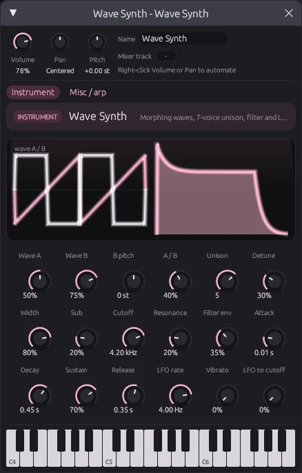
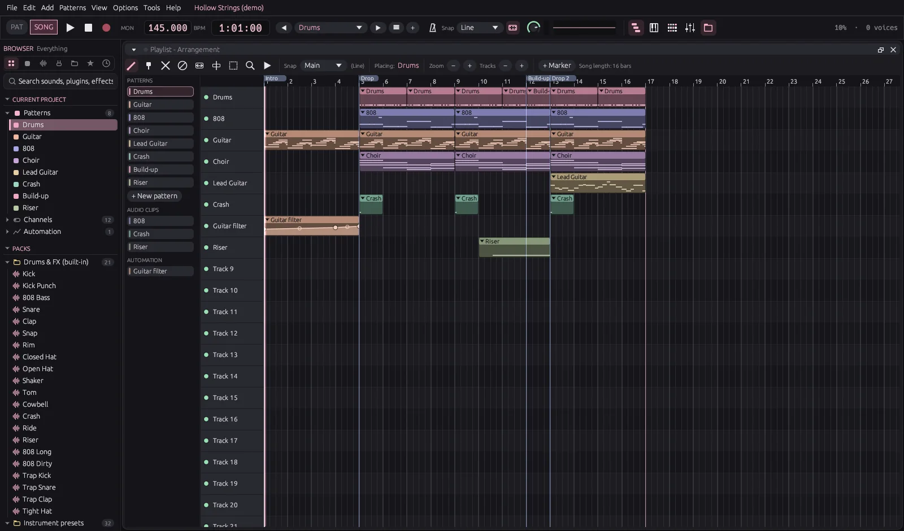
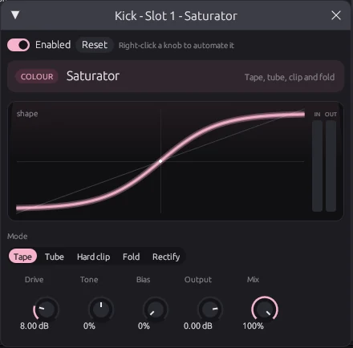
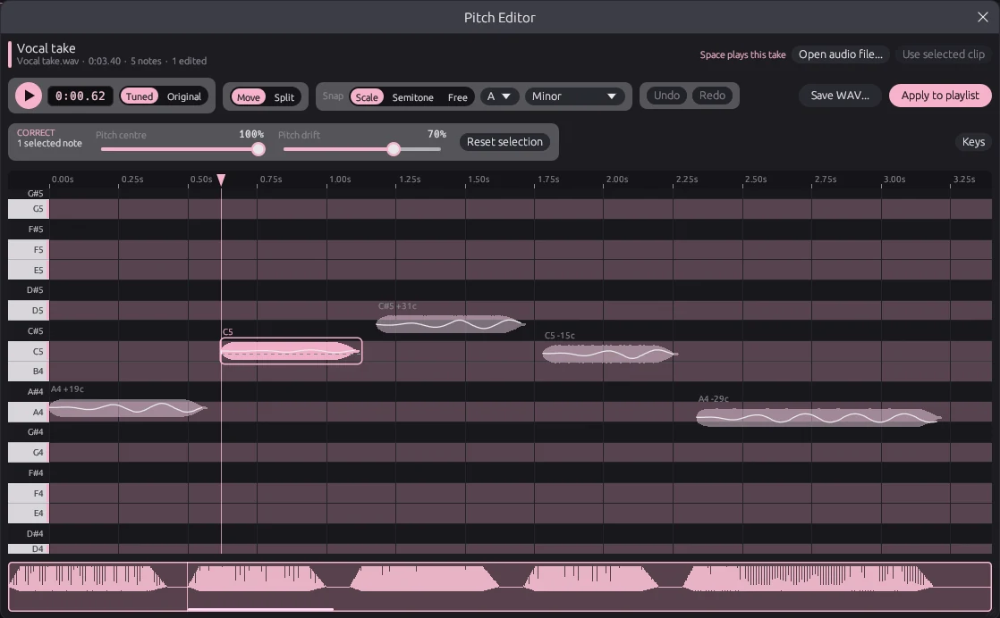
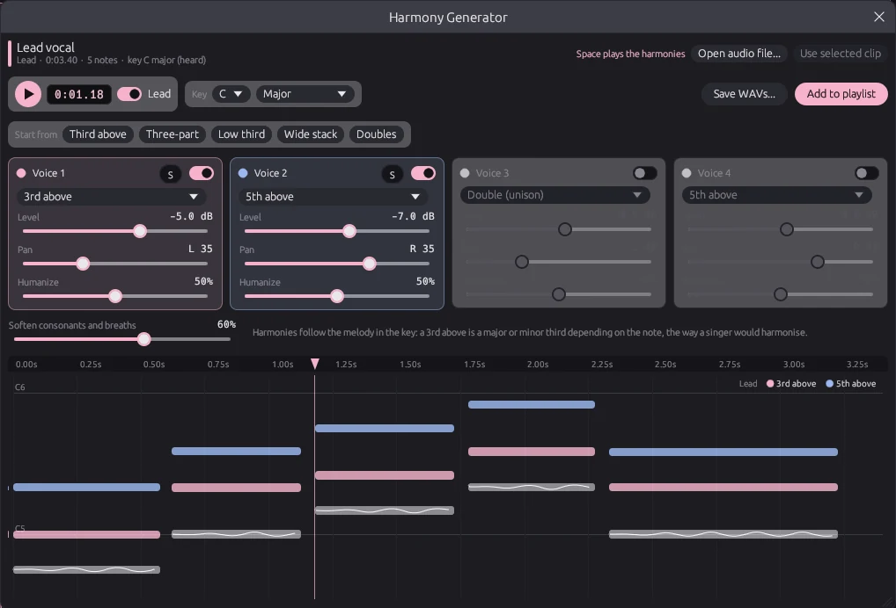
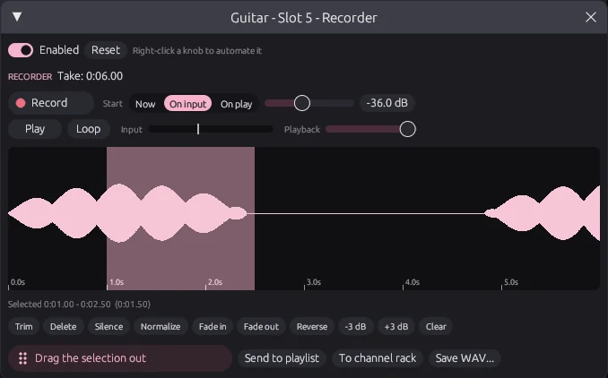

Instruments that already sound good
Sampler, Tri-Osc Synth, String Pluck, FM Tone, 808 Bass, Wave Synth, Electric Keys, Mallets and Vox Choir, plus 32 instrument presets to start from.
Panda Studio is a free, pattern-based music studio. Tap out drums, draw 808 slides, arrange, mix, and sing over it. Native, light and free.

Build-upbar 5
Sketch the groove in the step sequencer: 16, 32 or 64 steps, swing, and 21 built-in drums including a trap kit. Mute, solo, pan and route each channel, and shape velocity and panning per step in the graph editor.
Draw, paint, slice and strum notes. Use chord stamps and scale highlighting, and draw slide notes that bend a long 808 into the next pitch.
Lay out patterns, audio clips and automation clips on tracks. Drop audio from your file manager straight onto the bar you want, and loop a region by right-dragging the ruler.
Up to 125 inserts with ten effect slots each, sends, sidechain routing and a built-in 3-band EQ. Each strip has peak meters with hold and a clip light.
Dropbar 9

Sampler, Tri-Osc Synth, String Pluck, FM Tone, 808 Bass, Wave Synth, Electric Keys, Mallets and Vox Choir, plus 32 instrument presets to start from.

Saturator curves, EQ responses, compressors with gain reduction. Tempo-synced delays, Trance Gate, Tape Stop, Grain Cloud and Half Time are in there too.
Panda Studio hosts VST3 and VST2 instruments and effects in their real interfaces. Their settings are saved inside the project, and any of them can take a sidechain from another mixer track.
You can also drop in your own WAV, MP3, FLAC, OGG, AIFF or M4A samples.
Bridgebar 12
Record a vocal, tune it note by note, and harmonise it, without leaving the studio.



Colourbar 14
Eight themes, four dark and four light, and the studio remembers your choice. Try one: this page changes with it.
Outrobar 16
Run the installer. No admin rights needed: it adds Start menu and desktop shortcuts and opens .panda projects.
Open the disk image and drag Panda Studio into Applications. The first time, right-click it and choose Open. On macOS 15 and newer, use System Settings › Privacy & Security › Open Anyway.
One file that runs on most distributions: make it executable (chmod +x) and open it. Sound goes through ALSA, PipeWire or PulseAudio.
Panda Studio is made and tested on Windows. The macOS and Linux versions are experimental: same studio, same features, but expect some rough edges (and VST2 plugins show simple sliders there instead of their own window). Updates are signed and install themselves on all three. All versions
Panda Studio is free and always will be. If it's helped you make something, you can chip in to keep it going.
Support on Ko-fi